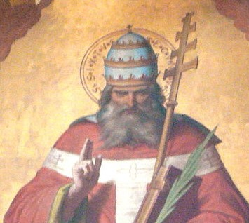

St. Sixtus II
St. Sixtus II (257-258) resumed friendly relations with the churches of Africa and Asia Minor, which had broken off communion with Rome in consequence of the dispute between St. Stephen and St. Cyprian. He was not molested when Valerian's first edict of persecution was published; but after the second edict of 258, which ordered the summary execution of all bishops, priests, and deacons, he was seized while preaching to his people in the small cemetery of Praetextatus on the Appian Way, nearly opposite the cemetery of St. Callistus, and was put to death with four of his deacons.
McSorley, Joseph. An Outline History of the Church by Centuries (from St. Peter to Pius XII). 2nd Ed. 1944.